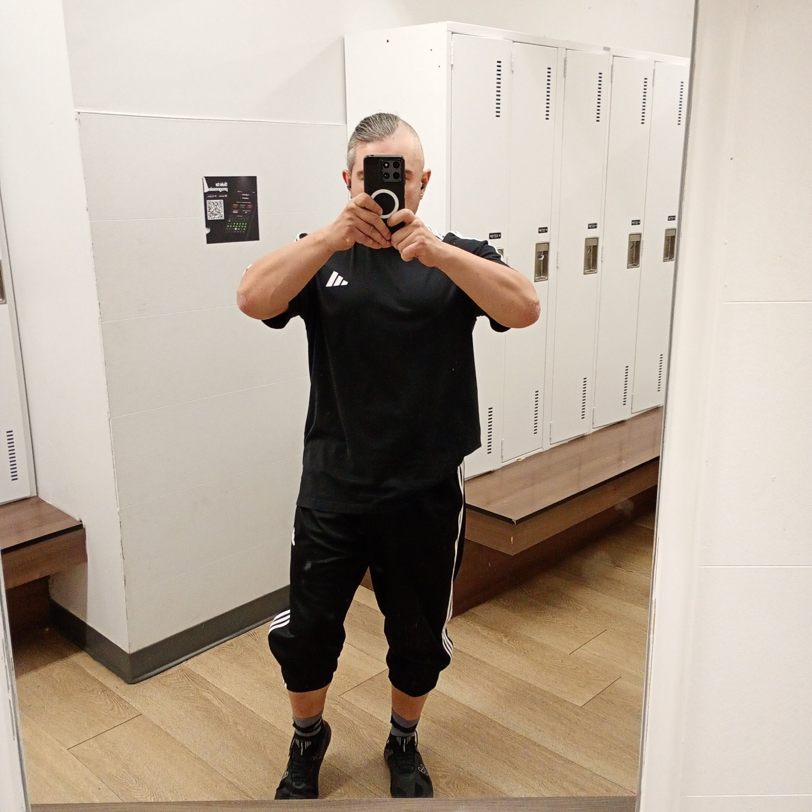

FIT PROTOCOL · V2.0Metabolic context
11 · Hormonal and Metabolic Interpretation
Chapter 11 - Hormonal and metabolic interpretation
An afternoon testosterone value is a trough, not a diagnosis.
The March 2026 testosterone of 7.4 nmol/L drawn at 13:28 is a non-diagnostic afternoon trough. Endocrine
Society and American Urological Association guidance requires two fasting morning draws (07:00-09:30) to
diagnose deficiency, because diurnal decline can halve afternoon values in younger men and blunts with age but does not disappear.
Metabolic interpretation in this system is conservative: body fat below 15 percent is an aspiration, not a
prerequisite for insulin sensitivity. Meal enzymes, fibre and meal sequencing are logged as tolerance tools.
Any hormonal intervention is a clinical decision outside this Encyclopedia's authority.
Analysis 11A. NMN (175 mg), boron (3 mg) and TESTOFX are recorded as used. None carries human
evidence sufficient to promise testosterone restoration. The Encyclopedia records; it does not prescribe
endocrine therapy.